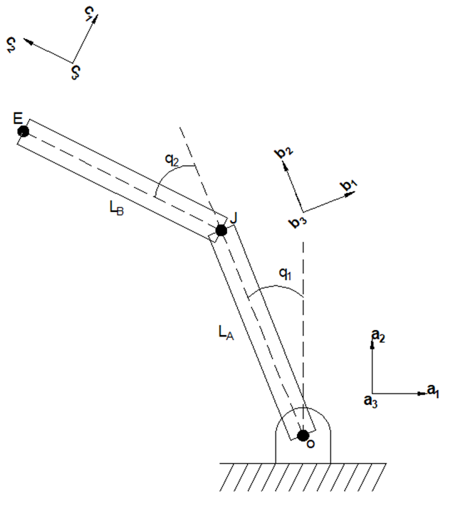

Overview
As part of a class on modeling and simulation in Fall 2023, I worked with a partner to model and simulated a robot arm as a simplified 2D, 2-link model. To accomplish this, we solved for the equations of motion and the forces on the arm using Kane's method and the software package/domain specific language AutoLev. AutoLev enabled us to perfom the multibody dynamics computations and generate a MATLAB script for simulating the equations of motion.
You can view our project report here.
Modeling and Simulation
Model Derivation
We represented the arm as two links joined at a joint with a base point and a point representing the end effector, with each point having its own frame of reference. After defining rotation matricies such that the velocity of the end effector relative to reference frame A could be found, we derived the velocity and acceleration at each point and the moment of inertia for each link - modeling them as thin rods for simplicity - so that we could use Kane's method for dynamic modeling to find the generalized forces on each link.

Simplified arm model
Simulation and Results
In addition to the hand calculations, we also used the software package/domain specific language AutoLev - which was specifically developed for performing multibody calculations and using Kane's method - to double-check our work. AutoLev also generated the MATLAB script used to simulate the arm at different input torques for each joint. This gave us good insight into the behavior of the system as shown by the graphs.
ASME IMECE Publication
In Spring 2024, our modeling and simulation professor Dr. Shawn Duan approached us about publishing our work and tying it into the field of robot arms designed to pitch baseballs, as that was an area he felt was ripe for research. While working on the article, we discovered errors in our equations that required us to re-run the simulation results, in addition to running a "no torque" simulation as a control.
In the article, we discussed how our methodologies and results could be a foundation for future work that would bridge the gap between theoretical models and practical applications. Our technical paper was published in the IMECE 2024 Journal and I presented our work at the IMECE 2024 conference in Portland, Oregon. You can view our presentation
here and our publication
in the IMECE journal. Note: Due to IMECE copyright, I am unable to provide a free copy of the publication.